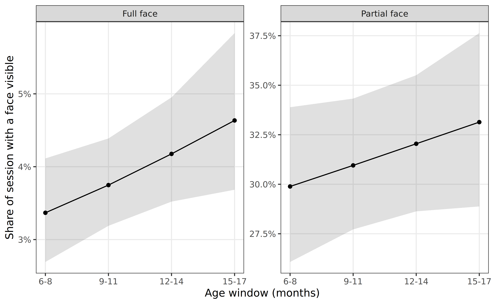
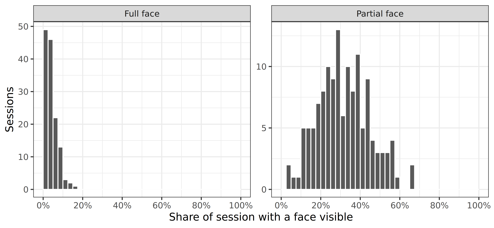
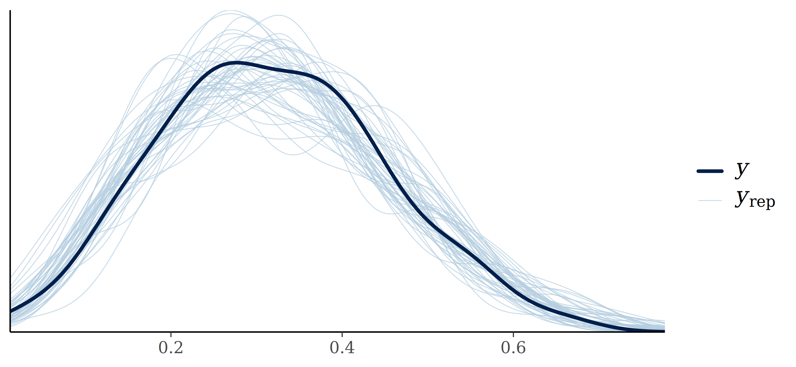
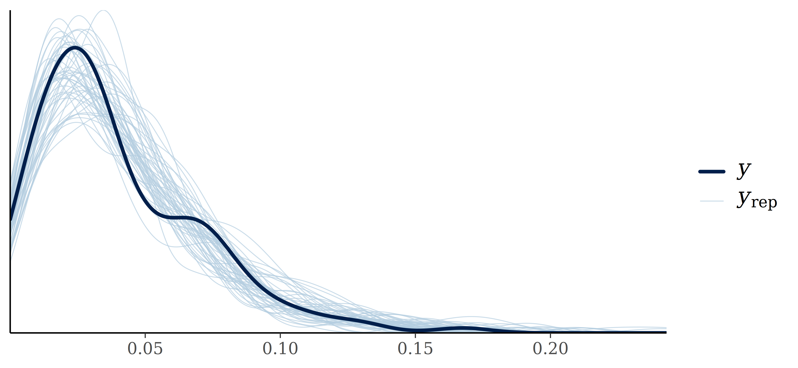

library(tidyverse)
library(brms)
library(easystats)
library(ggeffects)
library(gt)Face Presence
Approach
How much of an infant’s recorded day contained a visible face?
- Unit: the video timeline. Face presence is a property of the infant’s view, not of any individual person, so two co-visible faces do not make the view twice as face-filled. Durations are therefore a wall-clock union: intervals are merged before summing.
- This differs deliberately from the FACS configuration analyses, which use person-time, because a configuration belongs to a face while presence does not.
- Denominator: total session duration (not
valid_fullface). The question is what fraction of the recorded day had a face, so occluded and face-free time both belong in the base.
info <- read_rds("/mnt/datasets/SEEDLingS/2_PROCESSED/session_info.rds")
part <- read_rds("/mnt/datasets/SEEDLingS/2_PROCESSED/partface_coding.rds") |>
left_join(info, by = join_by(subject, wave, month))
full <- read_rds("/mnt/datasets/SEEDLingS/2_PROCESSED/fullface_coding.rds") |>
left_join(info, by = join_by(subject, wave, month))Union durations
# Merge overlapping intervals within a session, then sum. Face presence is a
# property of the timeline, so co-visible faces must not double-count.
union_duration <- function(df, onset, offset) {
df |>
arrange(subject, wave, month, {{ onset }}) |>
mutate(
.by = c(subject, wave, month),
.max_off = cummax(lag({{ offset }}, default = -Inf)),
.new_blk = {{ onset }} > .max_off,
.blk = cumsum(.new_blk)
) |>
summarize(
.by = c(subject, wave, month, .blk),
.on = min({{ onset }}),
.off = max({{ offset }}),
session_duration = first(session_duration)
) |>
summarize(
.by = c(subject, wave, month),
sum_sec = sum(.off - .on),
session_duration = first(session_duration)
)
}df_part <-
part |>
filter(part_duration > 0) |>
union_duration(part_onset, part_offset) |>
mutate(
pct_part = sum_sec / session_duration,
window = match(wave, c(6, 9, 12, 15)) - 1 # wave -> 0,1,2,3
) |>
complete(subject, window)
df_full <-
full |>
filter(full_duration > 0) |>
union_duration(full_onset, full_offset) |>
mutate(pct_full = sum_sec / session_duration) |>
arrange(subject, wave) |>
mutate(.by = subject, window = row_number() - 1) |>
complete(subject, window)MAIN TABLE: face presence by age window
summ <- function(x) {
tibble(n = length(x), Mean = mean(x), SD = sd(x),
Median = median(x), MAD = mad(x), Min = min(x), Max = max(x))
}
build <- function(df, col, measure) {
v <- df |> drop_na({{ col }}) |> pull({{ col }})
by_wave <- df |> drop_na({{ col }}) |>
summarize(.by = wave,
n = n(), Mean = mean({{ col }}), SD = sd({{ col }}),
Median = median({{ col }}), MAD = mad({{ col }}),
Min = min({{ col }}), Max = max({{ col }})) |>
mutate(Window = factor(wave, levels = c(6, 9, 12, 15),
labels = c("6-8 mo", "9-11 mo", "12-14 mo", "15-17 mo")))
total <- summ(v) |> mutate(Window = factor("All", levels = "All"))
bind_rows(by_wave, total) |> mutate(Measure = measure)
}
bind_rows(
build(df_part, pct_part, "Partial face"),
build(df_full, pct_full, "Full face")
) |>
mutate(Window = factor(Window,
levels = c("6-8 mo", "9-11 mo", "12-14 mo", "15-17 mo", "All"))) |>
select(Measure, Window, n, Mean, SD, Median, MAD, Min, Max) |>
arrange(desc(Measure), Window) |>
gt(groupname_col = "Measure") |>
tab_header(
title = "Face presence in infants' recorded day",
subtitle = "Share of session duration with a face visible"
) |>
fmt_percent(columns = c(Mean, SD, Median, MAD, Min, Max), decimals = 1) |>
tab_options(row_group.as_column = TRUE)| Face presence in infants' recorded day | ||||||||
| Share of session duration with a face visible | ||||||||
| Window | n | Mean | SD | Median | MAD | Min | Max | |
|---|---|---|---|---|---|---|---|---|
| Partial face | 6-8 mo | 43 | 30.5% | 14.3% | 28.3% | 16.0% | 3.6% | 65.3% |
| 9-11 mo | 41 | 32.1% | 13.9% | 29.8% | 16.1% | 2.8% | 55.6% | |
| 12-14 mo | 26 | 33.2% | 12.3% | 32.8% | 10.5% | 9.2% | 65.3% | |
| 15-17 mo | 25 | 32.0% | 10.7% | 32.4% | 8.0% | 13.1% | 54.9% | |
| All | 135 | 31.8% | 13.1% | 30.7% | 13.0% | 2.8% | 65.3% | |
| Full face | 6-8 mo | 44 | 3.4% | 2.9% | 2.4% | 2.1% | 0.1% | 11.3% |
| 9-11 mo | 41 | 3.8% | 2.8% | 3.0% | 1.6% | 0.2% | 13.2% | |
| 12-14 mo | 26 | 5.5% | 3.8% | 4.5% | 3.4% | 0.5% | 16.7% | |
| 15-17 mo | 25 | 3.9% | 2.2% | 3.3% | 2.6% | 0.6% | 8.3% | |
| All | 136 | 4.0% | 3.0% | 3.0% | 2.7% | 0.1% | 16.7% | |
Models
Beta regression on the proportion of session time with a face, with a random intercept per infant. mi() handles the sessions missing from the complete grid.
fit_presence <- function(data, outcome, form, file) {
brm(
formula = form,
family = Beta(link = "logit", link_phi = "log"),
data = data,
prior = if (str_detect(as.character(form)[3], "window"))
set_prior("normal(0, 0.5)", class = "b") else NULL,
iter = 10000, warmup = 9000, chains = 4, cores = 4,
refresh = 0, init = 0, file = file,
control = list(adapt_delta = 0.99, max_treedepth = 12),
backend = "cmdstanr",
)
}
part_null <- fit_presence(df_part, form = bf(pct_part | mi() ~ 1 + (1 | subject)),
file = "part_null_union")
part_linear <- fit_presence(df_part, form = bf(pct_part | mi() ~ 1 + window + (1 + window | subject)),
file = "part_linear_union")
part_monotonic <- fit_presence(df_part, form = bf(pct_part | mi() ~ 1 + mo(window) + (1 + mo(window) | subject)),
file = "part_monotonic_union")
full_null <- fit_presence(df_full, form = bf(pct_full | mi() ~ 1 + (1 | subject)),
file = "full_null_union")
full_linear <- fit_presence(df_full, form = bf(pct_full | mi() ~ 1 + window + (1 + window | subject)),
file = "full_linear_union")
full_monotonic <- fit_presence(df_full, form = bf(pct_full | mi() ~ 1 + mo(window) + (1 + mo(window) | subject)),
file = "full_monotonic_union")MAIN TABLE: change over age
res <-
list("Partial face" = part_linear, "Full face" = full_linear) |>
map(\(m) {
describe_posterior(m, parameters = "window") |>
as_tibble() |>
transmute(
Est. = Median, CL = CI_low, CU = CI_high,
OR = exp(Est.), OR_CL = exp(CL), OR_CU = exp(CU),
pd = pd
)
}) |>
list_rbind(names_to = "Outcome")Loading required namespace: rstangt(res) |>
tab_header(title = "Change in face presence across age windows") |>
fmt_number(columns = Est.:OR_CU, decimals = 2) |>
fmt_percent(columns = pd, decimals = 1) |>
cols_merge(columns = c(Est., CL, CU), pattern = "{1} ({2}, {3})") |>
cols_merge(columns = c(OR, OR_CL, OR_CU), pattern = "{1} ({2}, {3})") |>
cols_label(Est. = "Logit scale", OR = "Odds ratio", pd = "pd") |>
cols_align(align = "center", columns = c(Est., OR))| Change in face presence across age windows | |||
| Outcome | Logit scale | Odds ratio | pd |
|---|---|---|---|
| Partial face | 0.05 (−0.03, 0.13) | 1.05 (0.97, 1.14) | 89.1% |
| Full face | 0.11 (0.01, 0.22) | 1.12 (1.01, 1.25) | 98.2% |
FIGURE: face presence across age
ce_df <- function(model, label) {
plot(conditional_effects(model, effects = "window",
int_conditions = list(window = 0:3)), plot = FALSE)[[1]]$data |>
as_tibble() |>
transmute(window, estimate__, lower__, upper__, Measure = label)
}
fig_presence <-
bind_rows(ce_df(part_linear, "Partial face"),
ce_df(full_linear, "Full face")) |>
ggplot(aes(x = window, y = estimate__, ymin = lower__, ymax = upper__)) +
geom_ribbon(alpha = 0.15) +
geom_line() +
geom_point() +
facet_wrap(~Measure, scales = "free_y") +
scale_y_continuous(labels = scales::percent) +
scale_x_continuous(
breaks = 0:3,
labels = c("6-8", "9-11", "12-14", "15-17")
) +
labs(x = "Age window (months)",
y = "Share of session with a face visible") +
theme_bw(base_size = 10) +
theme(panel.grid.minor = element_blank())
fig_presence
ggsave("fig_presence.png", fig_presence, width = 6.5, height = 4, dpi = 300)IN-TEXT NUMBERS
vd_part <- variance_decomposition(part_null)
vd_full <- variance_decomposition(full_null)
list(
n_sessions_part = sum(!is.na(df_part$pct_part)),
n_sessions_full = sum(!is.na(df_full$pct_full)),
n_infants = n_distinct(df_part$subject),
part_mean = mean(df_part$pct_part, na.rm = TRUE),
part_median = median(df_part$pct_part, na.rm = TRUE),
full_mean = mean(df_full$pct_full, na.rm = TRUE),
full_median = median(df_full$pct_full, na.rm = TRUE),
part_icc = vd_part$ICC_decomposed,
full_icc = vd_full$ICC_decomposed
) |>
enframe(name = "quantity", value = "value") |>
mutate(value = map_chr(value, \(x) format(unlist(x), digits = 3))) |>
print(n = Inf)# A tibble: 9 × 2
quantity value
<chr> <chr>
1 n_sessions_part 135
2 n_sessions_full 136
3 n_infants 44
4 part_mean 0.318
5 part_median 0.307
6 full_mean 0.04
7 full_median 0.0304
8 part_icc 0.381
9 full_icc 0.2 cat(sprintf(
"## Key takeaways
1. **Faces are rare in infants' view.** A full face was visible for a median of
%.1f%% of the session; a partial face for %.1f%%.
2. **Infants differ from one another.** The intercept-only models attribute
%.0f%% (partial) and %.0f%% (full) of the variance to stable between-infant
differences.
",
100 * median(df_full$pct_full, na.rm = TRUE),
100 * median(df_part$pct_part, na.rm = TRUE),
100 * vd_part$ICC_decomposed,
100 * vd_full$ICC_decomposed
))Key takeaways
- Faces are rare in infants’ view. A full face was visible for a median of 3.0% of the session; a partial face for 30.7%.
- Infants differ from one another. The intercept-only models attribute 38% (partial) and 20% (full) of the variance to stable between-infant differences.
SUPPLEMENT
S1. Distributions
bind_rows(
df_part |> transmute(pct = pct_part, Measure = "Partial face"),
df_full |> transmute(pct = pct_full, Measure = "Full face")
) |>
drop_na(pct) |>
ggplot(aes(x = pct)) +
geom_histogram(color = "white", breaks = seq(0, 1, 0.025)) +
facet_wrap(~Measure, scales = "free_y") +
scale_x_continuous(breaks = seq(0, 1, 0.2), labels = scales::percent) +
labs(x = "Share of session with a face visible", y = "Sessions") +
theme_bw(base_size = 10)
S2. Monotonic models
The linear models assume evenly spaced age effects. The monotonic models relax that, allowing the spacing between windows to be estimated.
model_parameters(part_monotonic, effects = "fixed") |> print_md()| Parameter | Median | 95% CI | pd | Rhat | ESS (tail) |
|---|---|---|---|---|---|
| (Intercept) | -0.85 | (-1.06, -0.65) | 100% | 1.001 | 2131 |
| mowindow | 0.04 | (-0.03, 0.12) | 86.70% | 1.000 | 2776 |
model_parameters(full_monotonic, effects = "fixed") |> print_md()| Parameter | Median | 95% CI | pd | Rhat | ESS (tail) |
|---|---|---|---|---|---|
| (Intercept) | -3.36 | (-3.62, -3.13) | 100% | 1.000 | 2844 |
| mowindow | 0.10 | (-7.11e-03, 0.21) | 96.88% | 1.000 | 2392 |
S3. Model checks
pp_check(part_linear, ndraws = 50)
pp_check(full_linear, ndraws = 50)
S4. Variance decomposition
vd_part# Random Effect Variances and ICC
Conditioned on: all random effects
## Variance Ratio (comparable to ICC)
Ratio: 0.38 CI 95%: [0.10 0.58]
## Variances of Posterior Predicted Distribution
Conditioned on fixed effects: 0.01 CI 95%: [0.01 0.02]
Conditioned on rand. effects: 0.02 CI 95%: [0.01 0.02]
## Difference in Variances
Difference: 0.01 CI 95%: [0.00 0.01]vd_full# Random Effect Variances and ICC
Conditioned on: all random effects
## Variance Ratio (comparable to ICC)
Ratio: 0.20 CI 95%: [-0.33 0.52]
## Variances of Posterior Predicted Distribution
Conditioned on fixed effects: 0.00 CI 95%: [0.00 0.00]
Conditioned on rand. effects: 0.00 CI 95%: [0.00 0.00]
## Difference in Variances
Difference: 0.00 CI 95%: [-0.00 0.00]